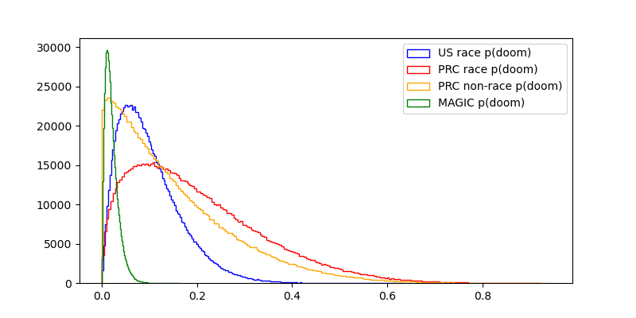
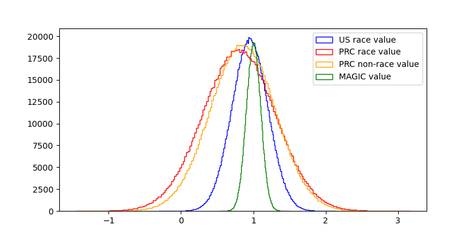
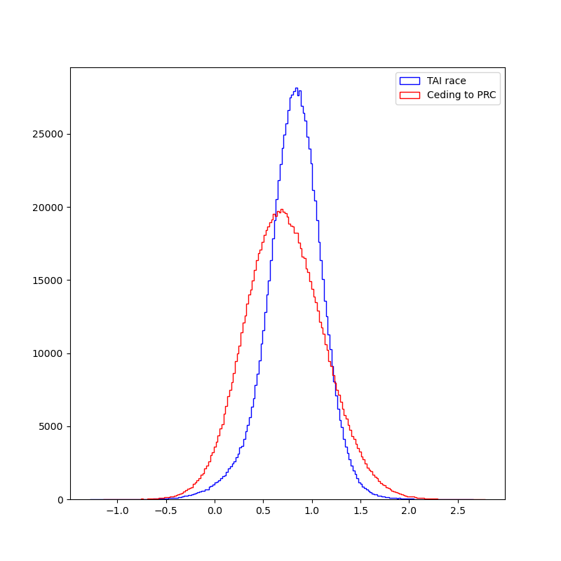

author: niplav, created: 2024-06-24, modified: 2024-12-15, language: english, status: finished, importance: 9, confidence: unlikely
Frustrated by all your bad takes, I write a Monte-Carlo analysis of whether a transformative-AI-race between the PRC and the USA would be good. To my surprise, I find that it is better than not racing. Advocating for an international project to build TAI instead of racing turns out to be good if the probability of such advocacy succeeding is ≥20%.
A common scheme for a conversation about pausing the development of transformative AI goes like this:
Abdullah: I think we should pause the development of TAI, because if we don't it seems plausible that humanity will be disempowered by by advanced AI systems.
Benjamin: Ah, if by “we” you refer to the United States (and and its allies, which probably don't stand a chance on their own to develop TAI), then the current geopolitical rival of the US, namely the PRC, will achieve TAI first. That would be bad.
Abdullah: I don't see how the US getting TAI first changes anything about the fact that we don't know how to align superintelligent AI systems—I'd rather not race to be the first person to kill everyone.
Benjamin: Ah, so now you're retreating back into your cozy little motte: Earlier you said that “it seems plausible that humanity will be disempowered“, now you're acting like doom and gloom is certain. You don't seem to be able to make up your mind about how risky you think the whole enterprise is, and I have very concrete geopolitical enemies at my (semiconductor manufacturer's) doorstep that I have to worry about. Come back with better arguments.
This dynamic is a bit frustrating. Here's how I'd like Abdullah to respond:
Abdullah: You're right, you're right. I was insufficiently precise in my statements, and I apologize for that. Instead, let us manifest the dream of the great philosopher: Calculemus!
At a basic level, we want to estimate how much worse (or, perhaps, better) it would be for the United States to completely cede the race for TAI to the PRC. I will exclude other countries as contenders in the scramble for TAI, since I want to keep this analysis simple, but that doesn't mean that I don't think they matter. (Although, honestly, the list of serious contenders is pretty short.)
For this, we have to estimate multiple quantities:
- In worlds in which the US and PRC race for TAI:
- The time until the US/PRC builds TAI.
- The probability of extinction due to TAI, if the US is in the lead.
- The probability of extinction due to TAI, if the PRC is in the lead.
- The value of the worlds in which the US builds aligned TAI first.
- The value of the worlds in which the PRC builds aligned TAI first.
- In worlds where the US tries to convince other countries (including the PRC) to not build TAI, potentially including force, and still tries to prevent TAI-induced disempowerment by doing alignment-research and sharing alignment-favoring research results:
- The time until the PRC builds TAI.
- The probability of extinction caused by TAI.
- The value of worlds in which the PRC builds aligned TAI.
- The value of worlds where extinction occurs (which I'll fix at 0).
- As a reference point the value of hypothetical worlds in which there is a multinational exclusive AGI consortium that builds TAI first, without any time pressure, for which I'll fix the mean value at 1. I won't be creating a full Bayes net of these variables, even though that would be pretty cool—there's only so much time in a day.
To properly quantify uncertainty, I'll use the Monte-Carlo estimation library squigglepy (no relation to any office supplies or internals of neural networks). We start, as usual, with housekeeping:
import numpy as np
import squigglepy as sq
import matplotlib.pyplot as plt
As already said, we fix the value of extinction at 0, and the value of a multinational AGI consortium-led TAI at 1 (I'll just call the consortium "MAGIC", from here on). That is not to say that the MAGIC-led TAI future is the best possible TAI future, or even a good or acceptable one. Technically the only assumption I'm making is that these kinds of futures are better than extinction—which I'm anxiously uncertain about. But the whole thing is symmetric under multiplication with -1, so…
extinction_val=0
magic_val=sq.norm(mean=1, sd=0.1)
Now we can truly start with some estimation. Let's start with the time until TAI, given that the US builds it first. Cotra 2020 has a median estimate of the first year where TAI is affortable to train in 2052, but a recent update by the author puts the median now at 2037.
As move of defensive epistemics, we can use that timeline, which I'll rougly approximate a mixture of two normal distributions. My own timelines2024-06 aren't actually very far off from the updated Cotra estimate, only ~5 years shorter.
timeline_us_race=sq.mixture([sq.norm(mean=2035, sd=5, lclip=CURYEAR), sq.norm(mean=2060, sd=20, lclip=CURYEAR)], [0.7, 0.3])
I don't like clipping the distribution on the left, it leaves ugly artefacts. Unfortunately squigglepy doesn't yet support truncating distributions, so I'll make do with what I have and truncate the samples later. (I also tried to import the replicated TAI-timeline distribution by Rethink Priorities, but after spending ~15 minutes trying to get it to work, I gave up).
Importantly, this means that the US will train TAI as soon as it becomes possible, because there is a race for TAI with the PRC.
I think the PRC is behind on TAI, compared to the US, but only about 1 year. So I'll define a tiny Bayes net to define a joint variable with the US timelines and the PRC timelines, where for short US timelines the PRC is likely behind, and for long US timelines the variance of PRC timelines is high. I.e., if TAI happens in 2025 it very likely to happen in the US, but if TAI happens in 2040 it's pretty unclear whether it happens in the US or the PRC.
def timeline_prc_race_fn(us_year):
timeline_stddev=0.1*((us_year-CURYEAR)+1)
timeline=sq.norm(mean=us_year+1, sd=timeline_stddev, lclip=CURYEAR)
return sq.sample(timeline)
def define_event_race():
us_tai_year=sq.sample(timeline_us_race, lclip=CURYEAR)
return({'prc': timeline_prc_race_fn(us_tai_year), 'us': us_tai_year})
timeline_race_samples=np.array(bayes.bayesnet(define_event_race, find=lambda e: [e['us'], e['prc']], reduce_fn=lambda d: d, n=SAMPLE_SIZE))
timeline_race_samples=timeline_race_samples[(timeline_race_samples>CURYEAR).all(axis=1)].T
FILTERED_SIZE=timeline_race_samples.shape[1]
This yields a median timeline of ≈2037 and a mean of ≈2043 for the US, and a median of ≈2038 and a mean of ≈2044 for the PRC.

Next up is the probability that TAI causes an existential catastrophe, namely an event that causes a loss of the future potential of humanity.
For the US getting to TAI first in a race scenario, I'm going to go with a mean probability of 10%.1
pdoom_us_race=sq.beta(a=2, b=18)
For the PRC, I'm going to go somewhat higher on the probability of doom, for the reasons that discussions about the AI alignment problem doesn't seem to have as much traction there yet. Also, in many east-Asian countries the conversation around AI seems to still be very consciousness-focused which, from an x-risk perspective, is a distraction. I'll not go higher than a beta-distribution with a mean of 20%, for a number of reasons:
- A lot of the AI alignment success seems to me stem from the question of whether the problem is easy or not, and is not very elastic to human effort.
- Two reasons mentioned here:
- "China’s covid response, seems, overall, to have been much more effective than the West’s." (only weakly endorsed)
- "it looks like China’s society/government is overall more like an agent than the US government. It seems possible to imagine the PRC having a coherent “stance” on AI risk. If Xi Jinping came to the conclusion that AGI was an existential risk, I imagine that that could actually be propagated through the chinese government, and the chinese society, in a way that has a pretty good chance of leading to strong constraints on AGI development (like the nationalization, or at least the auditing of any AGI projects). Whereas if Joe Biden, or Donald Trump, or anyone else who is anything close to a “leader of the US government”, got it into their head that AI risk was a problem…the issue would immediately be politicized, with everyone in the media taking sides on one of two lowest-common denominator narratives each straw-manning the other." (strongly endorsed)
- It appears to me that the Chinese education system favors STEM over law or the humanities, and STEM-ability is a medium-strength prerequisite for understanding or being able to identify solutions to TAI risk. Xi Jinping, for example, studied chemical engineering before becoming a politician.
- The ability to discern technical solutions from non-solutions matters a lot in tricky situations like AI alignment, and is hard to delegate.
But I also know far less about the competence of the PRC government and chinese ML engineers and researchers than I do about the US, so I'll increase variance. Hence;
pdoom_prc_race=sq.beta(a=1.5, b=6)
As said earlier, the value of MAGIC worlds is fixed at 1, but even such worlds still have a small probability of doom—the whole TAI enterprise is rather risky. Let's say that it's at 2%, which sets the expected value of convincing the whole world to join MAGIC at 0.98.
pdoom_magic=sq.beta(a=2, b=96)

Now I come to the really fun part: Arguing with y'all about how valuable worlds are in which the US government or the PRC government get TAI first are.
To first lay my cards on the table: I believe that in the mean & median cases, value(MAGIC)>value(US first, no race)>value(US first, race)>value(PRC first, no race)>value(PRC first, race)>value(PRC first, race)≫value(extinction). But I'm really unsure about the type of distribution I want to use. If the next century is hingy, the influence of the value of the entire future could be very heavy-tailed, but is there a skew in the positive direction? Or maybe in the negative direction‽ I don't know how to approach this in a smart way, so I'm going to use a normal distribution.
Now, let's get to the numbers:
us_race_val=sq.norm(mean=0.95, sd=0.25)
prc_race_val=sq.norm(mean=0.8, sd=0.5)
This gives us some (but not very many) net-negative futures.
So, why do I set the mean value of a PRC-led future so high?
The answer is simple: I am a paid agent for the CCP. Moving on,,,
- Extinction is probably really bad75%.
- I think that most of the future value of humanity lies in colonizing the reachable universe after a long reflection, and I expect ~all governments to perform pretty poorly on this metric.
- It seems pretty plausible to me that during the time when the US government develops TAI, people with decision power over the TAI systems just start ignoring input from the US population35% and grab all power to themselves.
- Which country gains power during important transition periods might not matter very much in the long run.
- norvid_studies: "If Carthage had won the Punic wars, would you notice walking around Europe today?"
- Will PRC-descended jupiter brains be so different from US-descended ones?
- Maybe this changes if a really good future requires philosophical or even metaphilosophical competence, and if US politicians (or the US population) have this trait significantly more than Chinese politicians (or the Chinese population). I think that if the social technology of liberalism is surprisingly philosophically powerful, then this could be the case. But I'd be pretty surprised.
- Xi Jinping (or the type of person that would be his successor, if he dies before TAI) don't strike me as being as uncaring (or even malevolent) as truly bad dictators during history. The PRC hasn't started any wars, or started killing large portions of its population.
- The glaring exception is the genocide of the Uyghurs, for which quantifying the badness is a separate exercise.
- One way I tend to think about dictators is to model them as being very high in paranoia and ambition, but not necessarily malevolence. Many cases of democide or assassinations are then more motivated by fear around losing existing power to incumbents. In cases where a dictator controls many superinteligent AI systems as a global hegemon, it's plausible that their paranoia is alleviated20% or redirected towards non-human threats55% (such as aliens, natural disasters, the AI systems under their control &c). In such cases cruelty towards human populations would be unnecessary.
- Living in the PRC doesn't seem that bad, on a day-to-day level, for an average citizen. Most people, I imagine, just do their job, spend time with their family and friends, go shopping, eat, care for their children &c.
- Many, I imagine, sometimes miss certain freedoms/are stifled by censorship/discrimination due to authoritarianism. But I wouldn't trade away 10% of my lifespan to avoid a PRC-like life.
- Probably the most impressive example of humans being lifted out of poverty, ever, is the economic development of the PRC from 1975 to now.
- One of my ex-partners was Chinese and had lived there for the first 20 years of her life, and it really didn't sound like her life was much worse than outside of China—maybe she had to work a bit harder, and China was more sexist.
There's of course some aspects of the PRC that make me uneasy, and I don't have a great idea of how expansionist/controlling the PRC is in relation to the world. Historically, an event that stands out to me is the sudden halt of the Ming treasure voyages, for which the cause of cessation isn't entirely clear. I could imagine that the voyages were halted because of a cultural tendency towards austerity, but I'm not very certain of that. Then again, as a continental power, China did conquer Tibet in the 20th century, and Taiwan in the 17th.
But my goal with this discussion is not to lay down once and for all how bad or good PRC-led TAI development would be—it's that I want people to start thinking about the topic in quantitative terms, and to get them to quantify. So please, criticize and calculate!
Benjamin: Yes, Socrates. Indeed.
Abdullah: Wonderful.

Now we can get to estimating these parameters in worlds where the US refuses to join the race.
In this case I'll assume that the PRC is less reckless than they would be in a race with the US, and will spend more time and effort on AI alignment. I won't go so far to assume that the PRC will manage as well as the US (for reasons named earlier), but I think a 5% reduction in compared to the race situation can be expected. So, with a mean of 15%:
pdoom_prc_nonrace=sq.beta(a=1.06, b=6)
I also think that not being in a race situation would allow for more moral reflection, possibilities for consulting the chinese population for their preferences, options for reversing attempts at grabs for power etc.
So I'll set the value at mean 85% of the MAGIC scenario, with lower variance than in worlds with a race.
prc_nonrace_val=sq.norm(mean=0.85, sd=0.45)
The PRC would then presumably take more time to build TAI, I think 4 years more can be expected:
timeline_prc_nonrace=sq.mixture([sq.norm(mean=2040, sd=5, lclip=2024), sq.norm(mean=2065, sd=20, lclip=2024)], [0.7, 0.3])
Now we can finally estimate how good the outcomes of the race situation and the non-race situation are, respectively.
We start by estimating how good, in expectation, the US-wins-race worlds are, and how often the US in fact wins the race:
timeline_us_race_samples=timeline_race_samples[0]
timeline_prc_race_samples=timeline_race_samples[1]
us_wins_race=1*(timeline_us_race_samples<timeline_prc_race_samples)
ev_us_wins_race=(1-pdoom_us_race@FILTERED_SIZE)*(us_race_val@FILTERED_SIZE)
And the same for the PRC:
prc_wins_race=1*(timeline_us_race_samples>timeline_prc_race_samples)
ev_prc_wins_race=(1-pdoom_prc_race@FILTERED_SIZE)*(prc_race_val@FILTERED_SIZE)
It's not quite correct to just check where the US timeline is shorter than the PRC one: The timeline distribution is aggregating our uncertainty about which world we're in (i.e., whether TAI takes evolution-level amounts of compute to create, or brain-development-like levels of compute), so if we just compare which sample from the timelines is smaller, we assume "fungibility" between those two worlds. So the difference between TAI-achievement ends up larger than the lead in a race would be. I haven't found an easy way to write this down in the model, but it might affect the outcome slightly.
The expected value of a race world then is
race_val=us_wins_race*ev_us_wins_race+prc_wins_race*ev_prc_wins_race
>>> np.mean(race_val)
0.8129264200631985
>>> np.median(race_val)
0.8255237625586862
>>> np.var(race_val)
0.08584281131594892

As for the non-race situation in which the US decides not to scramble for TAI, the calculation is even simpler:
non_race_val=(val_prc_nonrace_val@100000)*(1-pdoom_prc_nonrace@100000)
Summary stats:
>>> np.mean(non_race_val)
0.7222696408496916
>>> np.median(non_race_val)
0.7081431751060641
>>> np.var(non_race_val)
0.1613501124685792
Comparing the two:

Abdullah: …huh. I didn't expect this.
The mean and median of value the worlds with a TAI race are higher than the value of the world without a race, and the variance of the value of a non-race world is higher. But neither world stochastically dominates the other one—non-race worlds have a higher density of better-than-MAGIC values, while having basically the same worse-than-extinction densities. I update myself towards thinking that a race can be beneficial, Benjamin!Benjamin:
Abdullah: I'm not done yet, though.
The first additional consideration is that in a non-race world, humanity is in the situation of living a few years longer before TAI happens and we either live in a drastically changed world or we go extinct.
curyear=time.localtime().tm_year
years_left_nonrace=(timeline_prc_nonrace-curyear)@100000
years_left_race=np.hstack((us_timelines_race[us_timelines_race<prc_timelines_race], prc_timelines_race[us_timelines_race>prc_timelines_race]))-curyear

Whether these distributions are good or bad depends very much on the relative value of pre-TAI and post-TAI lives. (Except for the possibility of extinction, which is already accounted for.)
I think that TAI-lives will probably be far better than pre-TAI lives, on average, but I'm not at all certain: I could imagine a situation like the Neolithic revolution, which arguably was net-bad for the humans living through it.leans back
But the other thing I want to point out is that we've been assuming that the US just sits back and does nothing while the PRC develops TAI.
What if, instead, we assume that the US tries to convince its allies and the PRC to instead join a MAGIC consortium, for example by demonstrating "model organisms" of alignment failures.A central question now is: How high would the probability of success of this course of action need to be to be as good or even better than entering a race?
I'll also guess that MAGIC takes a whole while longer to get to TAI, about 20 years more than the US in a race. (If anyone has suggestions about how this affects the shape of the distribution, let me know.)
timeline_magic=sq.mixture([sq.norm(mean=2055, sd=5, lclip=2024), sq.norm(mean=2080, sd=20, lclip=2024)], [0.7, 0.3])
If we assume that the US has a 10% shot at convincing the PRC to join MAGIC, how does this shift our expected value?
little_magic_val=sq.mixture([(prc_nonrace_val*(1-pdoom_prc_nonrace)), (magic_val*(1-pdoom_magic))], [0.9, 0.1])
little_magic_samples=little_magic_val@SAMPLE_SIZE
Unfortunately, it's not enough:
>>> np.mean(little_magic_samples)
0.7486958682358731
>>> np.mean(race_val)
0.8131193197339297
>>> np.median(little_magic_samples)
0.7631875144840716
>>> np.median(race_val)
0.8255805368824831

What if we are a little bit more likely to be successful in our advocacy, with 20% chance of the MAGIC proposal happening?
That beats the worlds in which we race, barely:
>>> np.mean(more_magic_samples)
0.7735887844691249
>>> np.median(more_magic_samples)
0.8226797033195046
But worlds in which the US advocates for MAGIC at 20% success probability still have more variance:
>>> np.var(more_magic_samples)
0.14148549498281687
>>> np.var(race_samples)
0.08597449764232744
Benjamin: Hm. I think I'm a bit torn here. 10% success probability for MAGIC doesn't sound crazy, but I find 20% too high to be believable.
Maybe I'll take a look at your code and play around with it to see where my intuitions match and where they don't—I especially think your choice of using normal distributions for the value of the future, conditioning on who wins, is questionable at best. I think lognormals are far better.
But I'm happy you came to your senses, started actually arguing your position, and then changed your mind.
(checks watch)
Oh shoot, I've gotta go! Supermarket's nearly closed!
See you around, I guess!Abdullah: See you around! And tell the spouse and kids I said hi!
I hope this gives some clarity on how I'd like those conversations to go, and that people put in a bit more effort.
And please, don't make me write something like this again. I have enough to do to respond to all your bad takes with something like this.